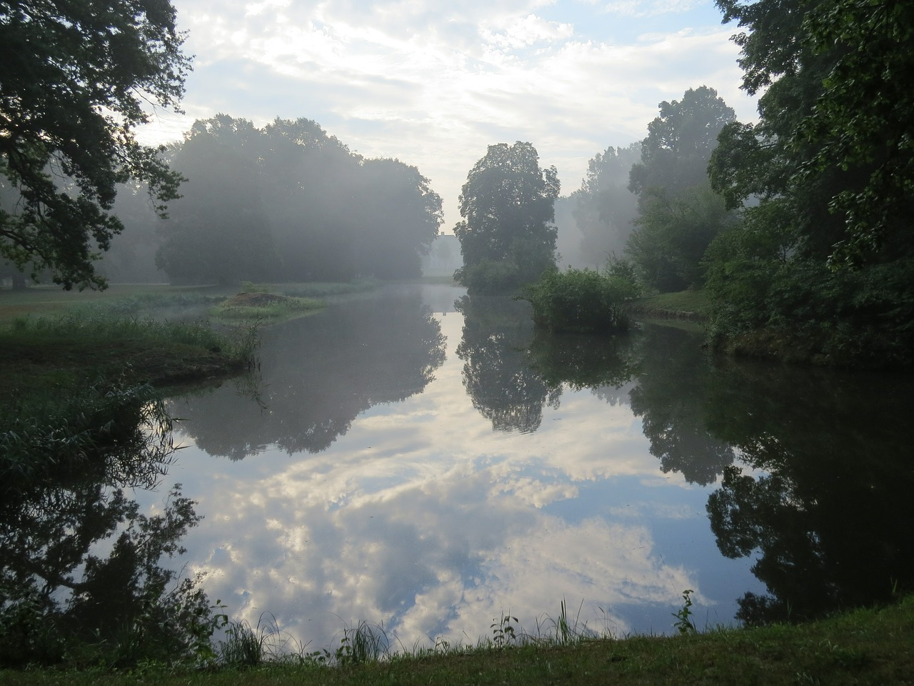

<!DOCTYPE html>
<html>
<head lang="en">
    <meta charset="UTF-8">
    <meta name="viewport" content="width=device-width, initial-scale=1.0"/>
    <title>Karin kotisivut</title>

    <link rel="stylesheet" href="css/reset.css" type="text/css" media="screen" />
    <link rel="stylesheet" href="css/style.css" type="text/css" media="screen" />
    <!-- Lightbox: click on one of the small images in the main content section you will see that a larger version of the image will show up on top of the page-->
    <link href="lightbox/css/lightbox.css" rel="stylesheet" />
    <link href='http://fonts.googleapis.com/css?family=Open+Sans|Baumans' rel='stylesheet' type='text/css'/>

    <!-- Makes the features visible in all browsers.-->
    <script src="js/modernizr.js"></script>
    <!-- Enables responsive design in Internet Explorer and other browsers which don´t support CSS Media Queries.-->
    <script src="js/respond.js"></script> <!-- respond.min.js en löytanyt -->

    <!-- include extern jQuery file but fall back to local file if extern one fails to load !-->
    <script src="http://code.jquery.com/jquery-1.11.1.min.js"></script>
    <script type="text/javascript">window.jQuery || document.write('<script type="text\/javascript" src="js\/1.11.1.jquery.min"><\/script>')</script>

    <script src="lightbox/js/lightbox.js"></script>
    <!-- Automatically creates the required prefixes and let´s us write the unprefixed CSS properties.-->
    <script src="js/prefixfree.min.js"></script>
    <script src="js/jquery.slides.min.js"></script>

    <!-- bxSlider Javascript file -->
    <script src="js/jquery.bxslider.min.js"></script>
    <!-- bxSlider CSS file -->
    <link href="css/jquery.bxslider.css" rel="stylesheet" />

    <!-- Own javascript -->
    <script src="js/myscripts.js"></script>

    <!-- Talla read more koko ajan nakyvissa ja sita klikkaamalla teksti show tai haviaa-->
    <script>

        $(document).ready(function() {

            var text = "Lisää...";
            document.getElementById("demo").innerHTML = text;

            $(".message").hide();
            $(".message2").hide();

            $(".readmore").click(function() {
                // TODO Tee paremmin toi text/text2/demo/demo2-osuus
                if ($(".message").is(":visible")) {
                    $(".message").hide();
                    text = "Lisää...";
                    document.getElementById("demo").innerHTML = text;
                } else {
                    $(".message").show("slow");
                    text = "Sulje...";
                    document.getElementById("demo").innerHTML = text;
                }
            });
            var text2 = "Lisää...";
            document.getElementById("demo2").innerHTML = text2;
            $(".readmore2").click(function() {
                if ($(".message2").is(":visible")) {
                    $(".message2").hide();
                    text2 = "Lisää...";
                    document.getElementById("demo2").innerHTML = text2;
                } else {
                    $(".message2").show("slow");
                    text2 = "Sulje...";
                    document.getElementById("demo2").innerHTML = text2;
                }
            });

            $(".emptyline")
            {
                document.getElementById("eline").innerHTML = '\n';
            }

        });
    </script>

</head>
<body>
    <header>
        <h1>Karin sivut</h1>
        <br class="clear"/>
        <div id="menu"></div>
    </header>

    <div class="slideshow">
            <ul class="bxslider">
                <li>
                    
                    <div>
                        <article id="slider_content1">
                            <h3>Uusia haasteita</h3>
                            <p>Uusia haasteita otetaan vastaan työrintamalla. Mielellään IT-alalta, mutta muukin kiinnostaa, jos osaaminen ja kiinnostus osuu kohdilleen.</p>
                        </article>
                    </div>
                </li>
                <li>
                    
                    <div>
                        <article id="slider_content2">
                            <h3>Työkokemus</h3>
                            <p>Vahva ohjelmistokehitystausta tietoliikennesektorilta painottuen olio-ohjelmointiin (Java, C++, tietokannat, ...).</p>
                        </article>
                    </div>
                </li>
                <li>
                    
                    <div>
                        <article id="slider_content3">
                            <h3>Uuden oppimista</h3>
                            <p>Opiskellut liiketoimintaosaamista TAMK:ssa ja tällä hetkellä opiskelemassa hyvinvointiteknologian ylempää AMK-tutkintoa. Yrittäjäkurssikin on käyty varmuuden vuoksi.</p>
                        </article>
                    </div>
                </li>
            </ul>
    </div>

    <section id="boxcontent">
        <h2 class="hidden">Kooste</h2>
        <article>
            <!-- png 24 px koko-->
            
            <h3>Työ ja osaaminen</h3>
            <p>Olen ohjelmistokehittäjä, jolla vankka osaaminen olio-ohjelmoinnista monissa tuotekehitysprojekteissa.
            </p>
            <span class="readmore"><div id="demo"></div></span>
            <span class="emptyline"><div id="eline"></div></span>

            <div class="message">
                Eniten kokemusta on Java- ja C++-pohjaisten sovellusten ohjelmoinnista tietoliikennetuotteisiin.
                Pääosin voidaan puhua serveripuolen toteutuksista, joissa yleensä on ollut myös tietokanta
                (Oracle, MySql) taustalla. Testiautomaatio on myös tuttua, kuten Agile-muotoinen työskentelytapakin.
                Tarkempia tietoja tekemisistä voit katsoa LinkedIn:sta.
            </div>
        </article>
        <article>
            
            <h3>Koulutus</h3>
            <p>
                Olen automaatiotekniikan AMK-insinööri.
            </p>
            <span class="readmore2"><div id="demo2"></div></span>
            <span class="emptyline"><div id="eline"></div></span>

            <div class="message2">
                Kaurialan lukion ovien sulkeuduttua takanani 1986 meni muutama vuosi työskennellessä ja sitten opiskelu
                jatkui Valkeakosken teknillisessä oppilaitoksessa, josta sain paperit 1995 jouluksi.
                Työnteko kursineen riittikin pitkään opiskeluksi, mutta 2012 kävin Liiketoimintaosaamisen
                erikoistumisopinnot (30 op) Tampereen ammattikorkeakoulussa. Vuonna 2013 kävin
                yrittäjäkurssin, mutta sille ei ole vielä ollut käyttöä. Tämän vuoden, siis 2015, alussa aloitin
                Hyvinvointieknologian ylemmän ammattikorkeakoulututkinnon suorittamisen Tampereen ammattikorkeakoulussa.
                Valmista pitäisi tulla joskus 2016 alkupuolella, jos kaikki menee hyvin. Opinnot voi hyvin suorittaa
                työn odessa, joten työntekoa ne eivät estä.
            </div>
        </article>
        <article>
            
            <h3>Vapaa-aika</h3>
            <p>
                Vapaa-ajalla pelaan tennistä, enimäkseen nelinpeliä ja käyn pari kertaa viikossa kuntosalilla.
                Luen myös jonkin verran sekä romaaneja, että tietokirjallisuutta.
            </p>
        </article>
        <br class="clear"/>
    </section>

    <div id="footer1"></div>

</body>
</html>